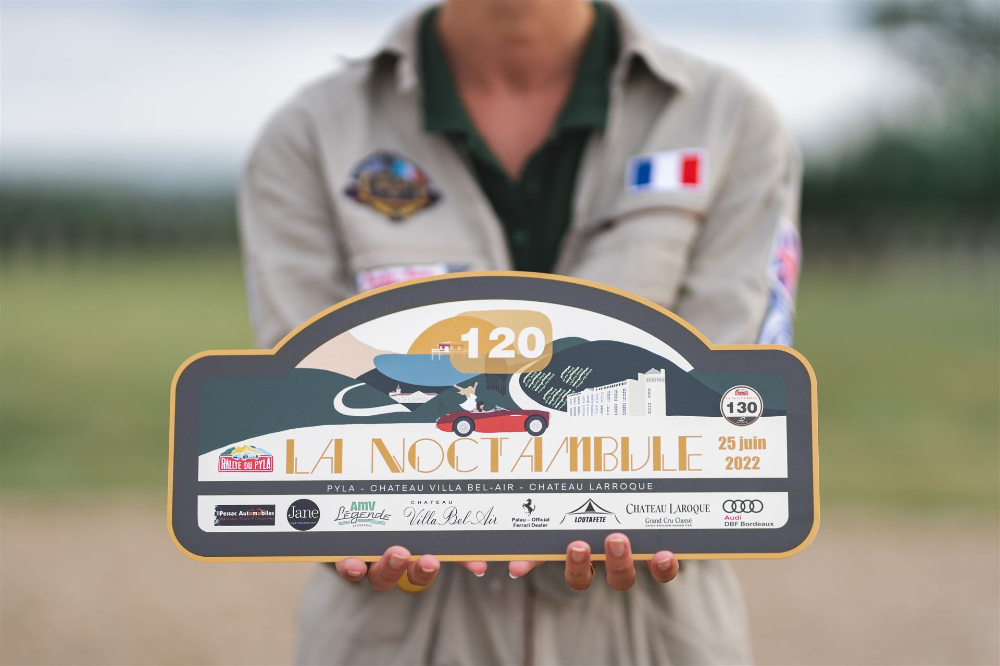

La Noctambule
Au crépuscule, prenez la route sur un itinéraire soigneusement tracé, ponctué de grands panoramas et d’étapes atypiques. À l’arrivée, au cœur du Pyla, la soirée se prolonge autour d’un cocktail chic et champêtre, entre passionnés.
Édition 2026 passée : rendez-vous l’an prochain.
Revoir en photos